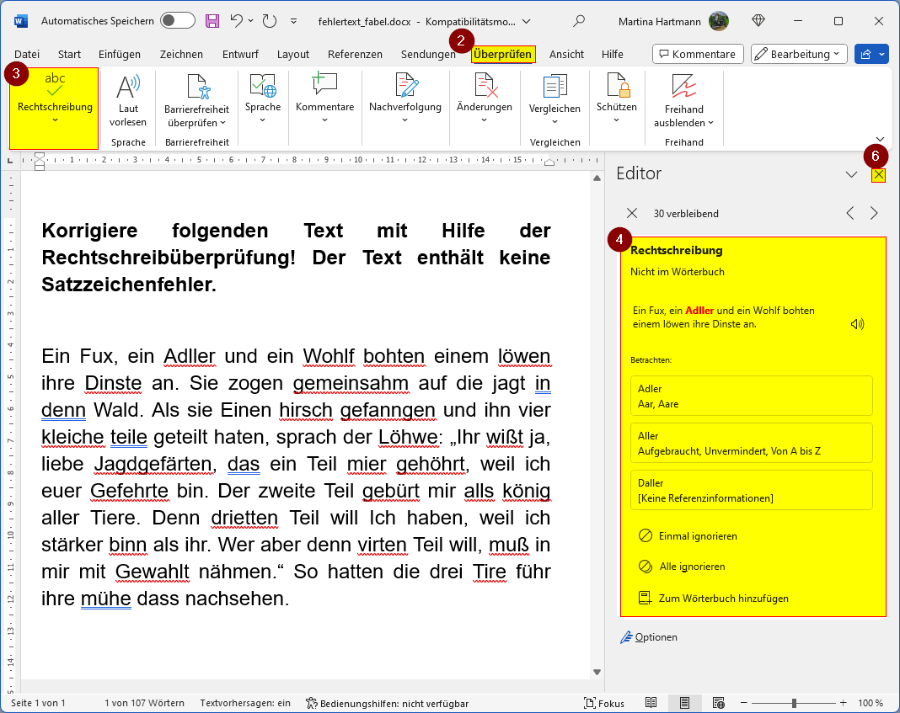

Manuelle Rechtschreibprüfung
Die manuelle Rechtschreibprüfung ermöglicht es Benutzern, die Rechtschreibung in ihrem Dokument zu überprüfen, auch wenn die automatische Prüfung deaktiviert ist oder zusätzlich zur automatischen Prüfung.
So führen Sie eine manuelle Rechtschreibprüfung durch
- Öffnen Sie Ihr Dokument in Microsoft Word.
- Klicken Sie auf die Registerkarte „Überprüfen“ in der Menüleiste am oberen Bildschirmrand.
- Klicken Sie auf die Option „Rechtschreibung und Grammatik“, um die manuelle Prüfung zu starten.
- Wählen Sie zwischen folgenden Optionen:
- Vorschlag akzeptieren
- Einmal ignorieren
- Alle ignorieren
- Zum Wörterbuch hinzufügen
- Wiederholen Sie diesen Vorgang bis die gesamte Überprüfung abgeschlossen ist.
- Klicken Sie auf X, um das Dialogfenster zu schließen.
Word wird nun Ihr Dokument durchgehen und jeden Fehler rot unterstreichen. Ein separates Fenster wird geöffnet, in dem jeder Fehler angezeigt wird, zusammen mit Vorschlägen zur Korrektur.
Hinweis:
Die Funktion "Alle ignorieren" ignoriert weitere identische Fehler im Dokument.
Wenn keine weiteren Fehler gefunden werden, zeigt Word eine Editor-Bewertung von 100% an.
